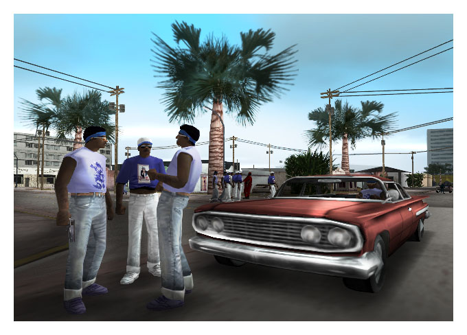
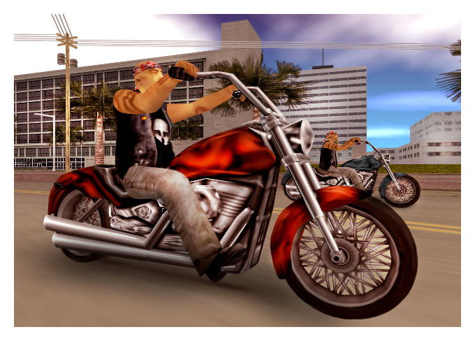

10. Rollerskaters
My feelings on rollerskaters are well known. Mugs. But real irritating. Try, the Aerobics instructor is heading
down the pavement, dreaming of his dream date and smacks straight into you. What a pain. Just cause I'd had a
skinful, you prat.
9. Self Help Programmes
These idiots were everywhere. You couldn't turn on the TV or the radio but you'd get some plonker trying to tell
you how to make things better. First up, I remember some nutter who thought he was a Viking. Called himself
Thor, as you do. Advised you to unleash the Viking within. Called birds wenches and warned you to beware of the
frost giant. Frost giant? It was a hundred degrees every day, you mug! Then there was that thief Jeremy Robard.
What was his thing? Think your way to success. That was his three step programme, although it turned out he was
actually a drug dealer or something like that. Either way, he was a prat. But, if you need someone to tell you
how to become successful and get on in this world, then you're no friend of mine.
8. Giggle Cream
Big scandal about this stuff. Was a spray cream with far too much propellant and far too little cream. Got
banned in 1988 after someone laughed themselves to death or something like that.
7. Used Car Salesmen
Same the world over. Only in Vice City, they went one step further. They'd sell you a car they hadn't even
bothered to change the number plates on after they nicked it. Bloody cheek. Particularly the ones with celebrity
endorsements.
6. Stalkers
Right pain in the ass when you're in the music business. Some nutter gets on your case and starts hassling you
every time you open your bleeding eyes, then they try and kill you. Nightmare.
5. Blox
Very unpleasant cleaning fluid. Not very funny if you threw it on someone, I can tell you. "Blox kills
indiscriminately" went the advert. Certainly worked on my brain.
4. Gangs
Irritating little pillocks who think they can tell you what to do. Mug you. Be rude about your clothes. Sell you
drugs. Sleep with your girlfriend. Very, very annoying. I moved with a better class of person myself.

3. Ammunation
This store would sell a gun to anyone, any time. Still do. Now, round my way, being tooled up does not mean
having a weapon.
2. Bikers
They didn't wash. They didn't like anyone. They liked to beat people up and take their clothes.

1. Kent Paul
I changed my mind. I really was public enemy number one. And I CAN count to ten, so up yours, Perkins.
(see, Tom, I didn't mention your name, nowhere. Maybe you won't get us killed now,
okay?)